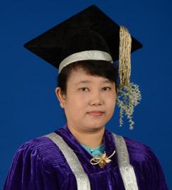

Dr. Mie Mie Thet Thwin
Dr. Mie Mie Thet Thwin is the rector of the University of Computer Studies, Yangon, Myanmar. She graduated with B.Sc.(Physics)Hons. at University of Yangon and M.Sc. (Computer Science) at University of Computer Studies, Yangon, Myanmar in 1995. She obtained Ph.D (Software Technology) from Nanyang Technological University, Singapore in 2006.